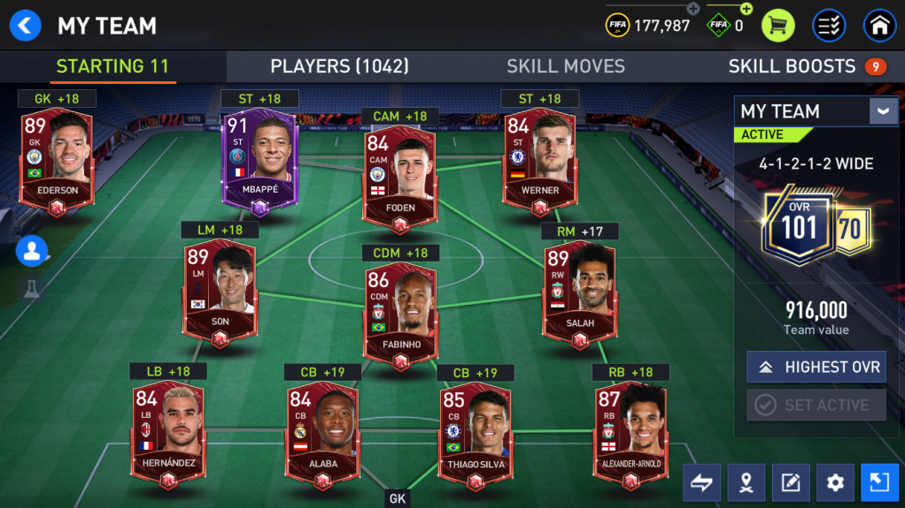
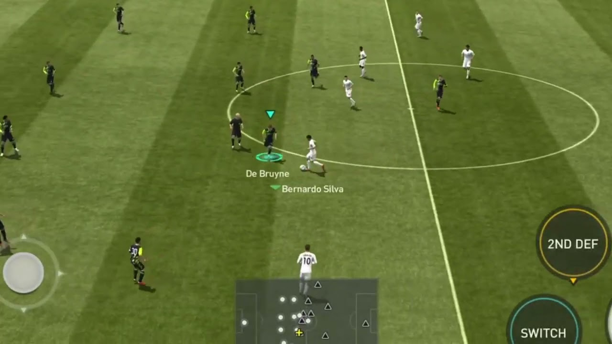

FIFA
FIFA es una serie de videojuegos de simulación de fútbol desarrollada y publicada por EA Sports, una división de Electronic Arts. Aquí tienes un informe completo sobre la serie FIFA:

Historia y Evolución
- Inicio: El primer juego de la serie, FIFA International Soccer, fue lanzado en diciembre de 1993. Desde entonces, se ha convertido en una de las franquicias más exitosas y reconocibles en la industria de los videojuegos.
- Desarrollo: Cada año, EA Sports lanza una nueva entrega de FIFA, que refleja las actualizaciones de los equipos, jugadores y ligas del mundo real. La serie ha evolucionado significativamente en términos de gráficos, jugabilidad y modos de juego a lo largo de los años.
Concepto y Jugabilidad
- Simulación de Fútbol: FIFA ofrece una experiencia de juego que intenta replicar la realidad del fútbol profesional. Los jugadores controlan equipos y pueden competir en partidos amistosos, ligas, torneos y competiciones internacionales.
- Modos de Juego: Incluye una variedad de modos como Carrera (donde se gestiona un equipo como entrenador o jugador), Ultimate Team (donde se construyen equipos con cartas de jugadores obtenidas en paquetes) y Pro Clubs (donde se crea y se controla un jugador personalizado en un equipo con amigos).
- Realismo: FIFA se esfuerza por ofrecer una experiencia auténtica, con licencias oficiales de equipos, ligas y jugadores, así como gráficos detallados y animaciones realistas de movimientos y celebraciones.

Características Clave
- Actualizaciones Anuales: Cada nueva entrega de FIFA introduce actualizaciones de jugadores, equipos y características de juego basadas en la temporada actual de fútbol.
- Modo Ultimate Team: Popular por su componente de coleccionismo y estrategia, donde los jugadores construyen equipos y compiten en línea por recompensas.
- Jugabilidad Multijugador: FIFA permite partidos en línea contra otros jugadores alrededor del mundo, así como juego local en modo cooperativo o competitivo.
Impacto Cultural y Popularidad
- Comunidad Global: FIFA tiene una comunidad global masiva de jugadores que participan en competiciones y eventos organizados por EA Sports y la comunidad.
- Efecto en el Fútbol Real: La serie FIFA ha influenciado la manera en que los fans ven y juegan al fútbol, sirviendo como una plataforma para la promoción de jugadores y equipos menos conocidos.
Tecnología y Plataformas
- Disponibilidad: FIFA está disponible en múltiples plataformas, incluyendo consolas de videojuegos (PlayStation, Xbox, Nintendo Switch), PC y dispositivos móviles (iOS y Android).
- Motor Gráfico: Utiliza el motor gráfico Frostbite para ofrecer gráficos y físicas avanzadas, mejorando la experiencia visual y la jugabilidad.
Monetización
- Modelo de Negocio: FIFA ofrece compras opcionales dentro del juego a través de monedas virtuales (FIFA Points) que se utilizan para comprar paquetes de jugadores en Ultimate Team u otros elementos cosméticos.
- DLC y Contenido Adicional: Se lanzan expansiones de contenido descargable (DLC) que incluyen nuevos modos de juego, equipos o actualizaciones de temporada.
En resumen, la serie FIFA de EA Sports ha establecido un estándar en los videojuegos de simulación de fútbol, ofreciendo una experiencia auténtica y emocionante para los fanáticos del deporte en todo el mundo, combinando innovación tecnológica con una fuerte presencia cultural y comunitaria.